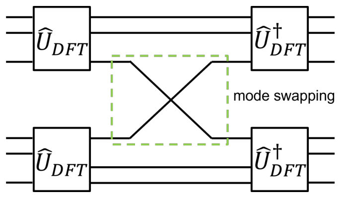

← Index · ← Previous · Next →
Authors: Jing Li, Thomas Fogarty, Thomas Busch, Andreas Ruschhaupt
Type: theory · Category: quantum gases · PDF: https://arxiv.org/pdf/2609.14786v1
Analysis basis: full PDF text, analyzed in chunks
Topic relevance: analog quantum simulation 3/5 · Keldysh / 2PI / non-Gaussian methods 2/5 · methods for driven-dissipative 2/5 · quantum measurements 1/5
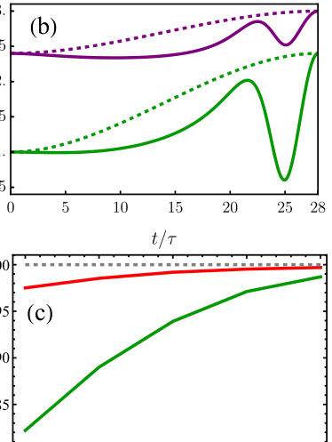
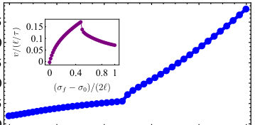
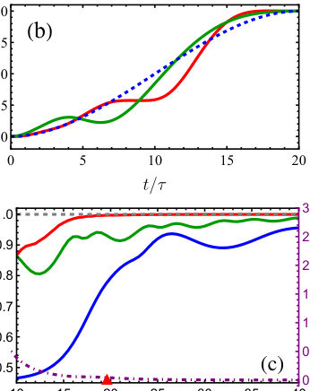
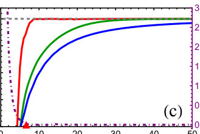
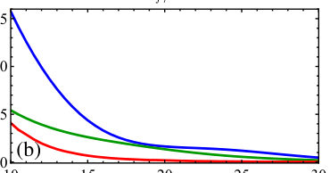
Summary. This paper details a variational inverse-engineering approach to rapidly control one-dimensional quantum droplets in Bose-Bose mixtures. By tuning the system's nonlinear interactions near Feshbach resonances, the authors derive optimized protocols that ensure high-fidelity state transfer. This method offers a powerful tool for controlled matter-wave engineering in ultracold quantum gas systems.
Why it may be interesting. This work provides a concrete, mathematically rigorous pathway for fast, non-adiabatic control of interacting quantum matter waves, which is crucial for engineering novel quantum states in ultracold atomic experiments.
Main problem. The primary goal is to achieve fast, controlled state-to-state manipulation of self-bound quantum droplets while effectively suppressing residual excitations.
Main result. The optimized variational shortcut-to-adiabaticity protocols successfully connect initial and target droplet states with final fidelities exceeding 0.99 on short time scales.
Method. The authors employ a variational shortcut-to-adiabaticity (STA) scheme combined with inverse engineering to derive time-dependent interaction protocols.
Model / system. The system models one-dimensional quantum droplets in ultracold Bose-Bose mixtures, governed by an extended Gross-Pitaevskii equation incorporating both Mean-Field (MF) and Beyond-Mean-Field (BMF) nonlinearities.
Key observables. Final fidelity (F), flatness parameter (q), constraint error ($\xi^2$), and the time evolution of the width ($\sigma$).
Important parameters / regimes. The control parameters are the time-dependent nonlinearities $\delta g(t)$ (MF) and $g(t)$ (BMF), tuned via Feshbach resonances.
Assumptions / limitations. The analysis relies on a variational ansatz for the wave function and utilizes the adiabatic approximation to derive the control protocols.
Figures summary. Figures compare optimized STA protocols against forced protocols and reference ramps, showing fidelity and constraint error evolution for fixed BMF or fixed MF nonlinearities.
Paper structure. The paper develops the variational Lagrangian formulation, derives the equations of motion, and then applies the STA method using inverse engineering to design and test optimized control protocols under unconstrained and two constrained scenarios.
We propose a variational shortcut-to-adiabaticity scheme for the fast dynamical control of one-dimensional quantum droplets in ultracold Bose-Bose mixtures. The control is implemented through time-dependent mean-field (MF) and beyond-mean-field (BMF) nonlinearities, which can be adjusted by tuning intra- and interspecies scattering lengths near Feshbach resonances. Using a bright-droplet variational ansatz, together with inverse engineering, we derive time-dependent interaction protocols that connect prescribed initial and target self-bound states while suppressing residual excitations. We analyze three representative settings: simultaneous control of the MF and BMF terms, control with fixed BMF nonlinearity and time-dependent MF interaction, and control with fixed MF nonlinearity and time-dependent BMF interaction. For the constrained cases, additional variational degrees of freedom are introduced to optimize the protocols while respecting the imposed restrictions. Direct numerical simulations of the extended Gross-Pitaevskii equation confirm final fidelities exceeding $0.99$ on short time scales, and show that the optimised protocols are robust against finite calibration errors of the nonlinear control strength. Our results provide a route toward fast state-to-state manipulation of self-bound quantum fluids and may be useful for controlled matter-wave engineering in ultracold mixtures.
Authors: Yosuke Ueno, Shinichi Sunami, Toshihide Hinokuma, Yasunari Suzuki, Akihisa Goban, Hayata Yamasaki, Teruo Tanimoto, Ilkwon Byun
Type: theory · Category: quantum information and computing · PDF: https://arxiv.org/pdf/2609.14478v1
Analysis basis: full PDF text, analyzed in chunks
Topic relevance: QC/QI experiment 3/5 · Rydberg arrays 3/5 · analog quantum simulation 1/5 · quantum measurements 1/5
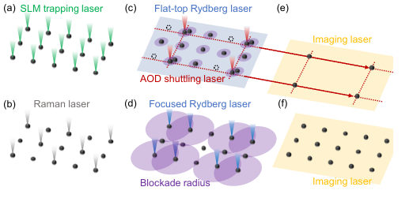
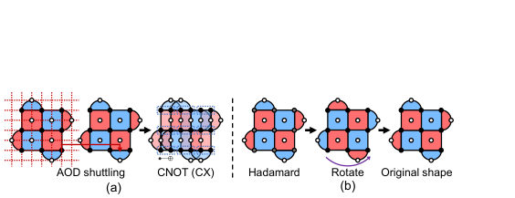
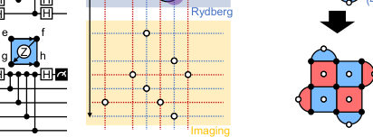
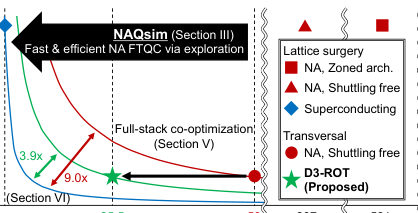
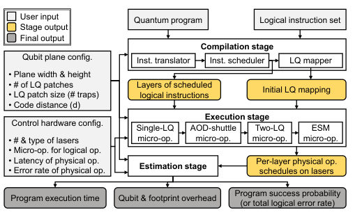
Summary. This paper introduces NAQsim, a comprehensive, open-source simulation framework designed to model and optimize Fault-Tolerant Quantum Computing on neutral atoms. By allowing full-stack co-optimization across software and hardware, the authors successfully identified and mitigated a major performance bottleneck—patch rotations—achieving a significant speedup for quantum computation benchmarks.
Why it may be interesting. It provides a crucial, high-level simulation tool that bridges the gap between theoretical quantum error correction codes and the specific, complex hardware constraints of neutral-atom platforms, which is vital for advancing the field.
Main problem. Developing fast and efficient protocols for Fault-Tolerant Quantum Computing (FTQC) using neutral-atom platforms, which are currently limited by slow physical operations.
Main result. The proposed framework, NAQsim, identified 'patch rotations' as a major bottleneck, and optimizing this led to a 2.27x speedup for benchmark workloads with minimal overhead.
Method. The authors propose NAQsim, an open-source, full-stack simulation framework that co-optimizes the compiler, control hardware, and qubit plane for neutral-atom FTQC architectures.
Model / system. The system is based on neutral-atom quantum computing using optical tweezers for trapping and Rydberg interactions for two-qubit gates. It focuses on implementing transversal surface codes for error correction.
Key observables. Execution time (speedup), qubit overhead/footprint, and logical error rate (LER).
Important parameters / regimes. Gate times (e.g., 100 ns for single-qubit gates), shuttling times ($\mu$s to ms), and the size of the surface code ($d$).
Assumptions / limitations. The framework assumes the ability to model the complex interplay between software compilation decisions and physical hardware constraints (AODs, laser addressing).
Figures summary. Figures illustrate the physical components (SLM, AODs, lasers), the surface code structure, and comparisons of execution time/space-time cost between different architectural approaches (e.g., global vs. selective lasers).
Paper structure. The paper introduces the problem, details the NAQsim framework (Compilation $ ightarrow$ Execution $ ightarrow$ Estimation), applies it to identify and optimize the patch rotation bottleneck, and presents the resulting optimized architecture (D3-ROT).
Technological advances in neutral-atom platforms have opened a new path toward designing efficient protocols for fault-tolerant quantum computing (FTQC). However, each physical operation is still orders of magnitude slower than on other platforms, such as superconducting qubits. Therefore, architects must identify fast and efficient FTQC architectures, which require reliable modeling tools to explore various design choices across the software, classical hardware, and quantum device stacks of neutral-atom platforms. In this paper, we propose NAQsim, an open-source simulation framework for neutral-atom FTQC architectures based on transversal gates. As its key feature, NAQsim enables detailed full-stack architecture evaluation that opens opportunities to explore previously overlooked performance bottlenecks. As a first use case for NAQsim, we identify one such bottleneck, patch rotations, perform full-stack co-optimization, and finally derive a near-rotation-free architecture (D3-ROT). For practical FTQC benchmark workloads, D3-ROT achieves a 2.27x speedup from this single bottleneck alone, with minimal footprint overhead. These results point to a much broader space of full-stack optimizations that NAQsim makes accessible for transversal surface-code architectures and beyond.
Authors: Chandradip Khamrai, Sakuntala Chatterjee
Type: theory · Category: statistical mechanics · PDF: https://arxiv.org/pdf/2609.14541v1
Analysis basis: full PDF text, analyzed in chunks
Topic relevance: non-equilibrium universality 3/5 · Frenkel-Kontorova 1/5 · Keldysh / 2PI / non-Gaussian methods 1/5 · analog quantum simulation 1/5 · driven-dissipative phase transition 1/5 · methods for driven-dissipative 1/5
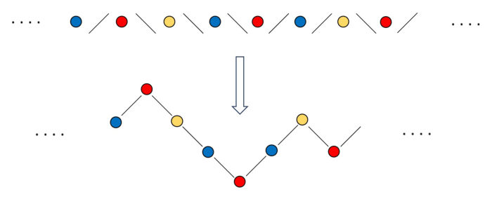
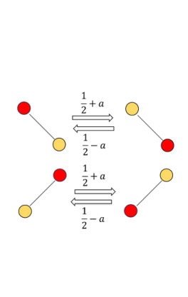
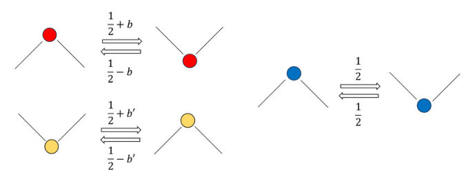
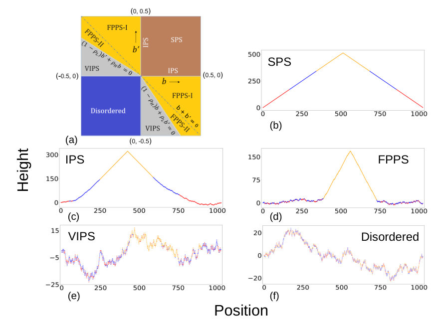
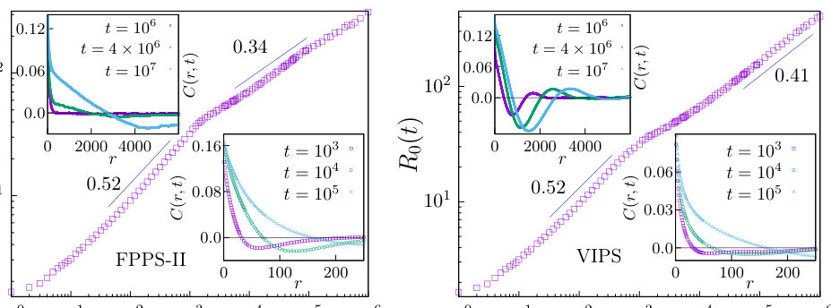
Summary. This paper analyzes the unusual coarsening dynamics in the Light-Heavy-Vacancy (LHV) model, a 1D driven system. Unlike typical systems, domain growth here involves disintegration and reformation, leading to complex power-law scaling. The work uses hydrodynamics to explain periodic oscillations in the landscape height, highlighting non-equilibrium physics in coupled active matter systems.
Why it may be interesting. The study of non-equilibrium phase ordering, driven by particle interactions on fluctuating substrates, provides a rich platform for understanding complex many-body dynamics beyond equilibrium statistical mechanics.
Main problem. The study investigates the unusual phase ordering kinetics and coarsening dynamics in a coupled driven system.
Main result. The coarsening process is highly unusual, featuring domain disintegration rather than merger, and the landscape height fluctuations exhibit periodic oscillations explained by traveling normal modes.
Method. The research employs numerical simulations, linear hydrodynamics, and mean field approximations to analyze the time evolution of characteristic length scales.
Model / system. The system is a one-dimensional lattice model called the Light-Heavy-Vacancy (LHV) model, involving two hardcore particle species ('light' and 'heavy') moving on a fluctuating height landscape.
Key observables. Characteristic length scale of ordered domains ($R_0(t)$), particle correlation function $C(r, t)$, and periodic oscillations in landscape height fluctuations.
Important parameters / regimes. Bias strengths ($a, b, b'$), particle densities ($ ho_H, ho_L$), and the relative strength of aligned vs. reverse biases.
Assumptions / limitations. The analysis relies on linear hydrodynamics and mean field approximations, and the system is defined on a 1D periodic lattice.
Figures summary. The notes reference phase diagrams showing different ordered/disordered phases (SPS, IPS, FPPS-II, VIPS) and the power-law growth of the coarsening length scale $R_0(t)$ in different time regimes.
Paper structure. The paper first introduces the LHV model and its dynamics, then analyzes the phase diagram based on bias parameters, and finally focuses on the non-conventional coarsening kinetics, including hydrodynamic explanations for oscillations.
We study a one dimensional lattice model of coupled driven system where two kinds of hardcore particle species, light' andheavy', move on a fluctuating landscape. Light particles prefer to move upward along the local height gradient of the landscape, and heavy particles prefer to move downhill. In addition, these particle species also exert bias on the local height profile. The unoccupied or vacant parts of the landscape experience no bias and undergo symmetric height fluctuations. In an earlier work, we had derived a phase diagram of the system consisting of different kinds of ordered and disordered phases. In the ordered phase, one or both particle species phase-separate, while the landscape forms a large hill or deep valley. Here we study coarsening by monitoring the development of long-range order in the particles and landscape from an initially disordered state. Unlike conventional phase-ordering systems, where coarsening proceeds through the formation and merger of ordered domains, here we find that domains formed at early times become unsustainable at later times. Instead of merging together, these early domains disintegrate and new domains emerge which finally give rise to large scale ordered structure in the long time limit, resulting a highly unusual coarsening behavior. For particle coarsening, the characteristic length scale grows with two distinctly different power law exponents at early and late times. The landscape coarsening is even more dramatic where the length scale decreases for brief time-intervals, instead of increasing continuously. The height fluctuations of the landscape shows periodic oscillations with time during the coarsening phase. Using linear hydrodynamics we explain that this is caused by three normal modes which move through the system like travelling waves. We calculate the propagation velocities of these modes within mean field approximation.
Authors: Hayede Zarei, Mohammad Hossein Zarei
Type: theory · Category: statistical mechanics · PDF: https://arxiv.org/pdf/2609.13748v1
Analysis basis: full PDF text, analyzed in chunks
Topic relevance: analog quantum simulation 3/5 · Keldysh / 2PI / non-Gaussian methods 1/5 · driven-dissipative phase transition 1/5 · methods for driven-dissipative 1/5 · non-equilibrium universality 1/5 · quantum measurements 1/5
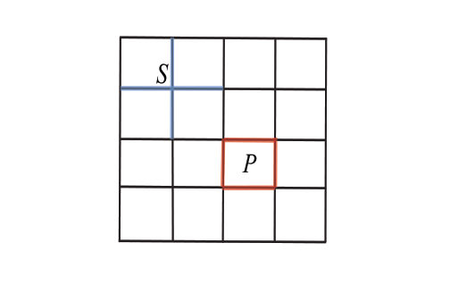
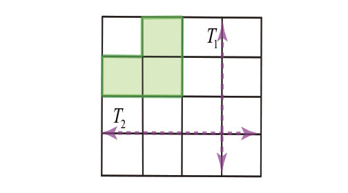
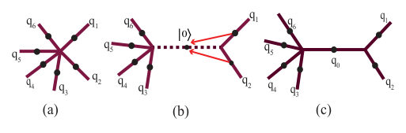
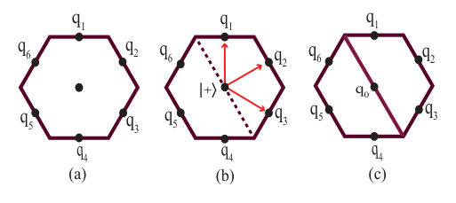
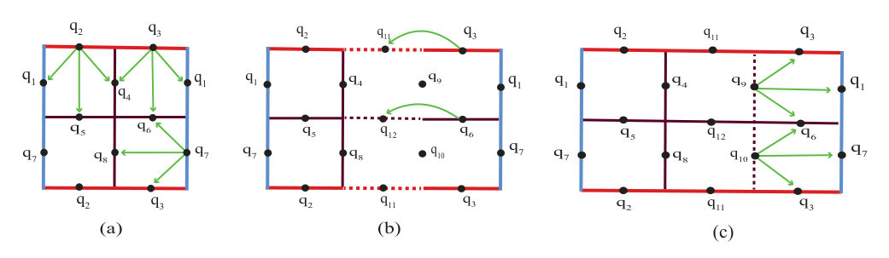
Summary. This work uses variational quantum simulation to study the topological phase transition in the toric code model under a magnetic field. By analyzing the ground state energy and global entanglement, the authors confirm the transition's signature. Crucially, they demonstrate that the topological phase remains robust against realistic quantum gate noise.
Why it may be interesting. The combination of topological order, phase transition detection, and noise resilience makes this highly relevant for understanding the feasibility of quantum computation on near-term, noisy hardware.
Main problem. The paper investigates the detection of a topological phase transition within the toric code model when subjected to a uniform magnetic field.
Main result. The ground state energy exhibits a distinct singularity at the transition point, and the topological phase shows notable robustness against noise, decreasing linearly with increasing noise strength.
Method. Variational quantum circuits (VQE) are used for shot-based simulation, complemented by finite-size scaling analysis and the computation of global entanglement measures.
Model / system. The system is the Toric Code model defined on a square lattice with periodic boundary conditions (a torus). The Hamiltonian involves vertex and plaquette stabilizers, and the simulation is extended to include a uniform magnetic field and realistic noise channels.
Key observables. Ground state energy, global entanglement, conditional global entanglement, and the critical magnetic field strength ($h_c$).
Important parameters / regimes. Lattice size ($L$), magnetic field strength ($h$), and noise strength factor ($s$).
Assumptions / limitations. The simulation relies on shot-based measurements to mimic real quantum hardware, and the analysis incorporates specific noise models (depolarizing channels).
Figures summary. Figures illustrate finite-size scaling of $h_c$ vs $1/L$, the behavior of conditional global entanglement ($\Delta G$) peaking near $h_c$, and the linear decrease of $h_c$ as a function of noise strength $s$.
Paper structure. The paper follows a structure covering the model definition, circuit construction, investigation of the magnetic field effects, detailed study of noise effects, and concluding remarks.
We investigate the capability of variational quantum circuits in detecting a topological phase transition within the toric code model subjected to a uniform magnetic field. The detection is carried out via shot-based computations of both the ground state energy and the global entanglement. We begin by employing well-established renormalization techniques to construct a quantum circuit that accurately represents the pure toric code under periodic boundary condition. This circuit is subsequently parameterized to enable a shot-based variational simulation of the ground state in the presence of the magnetic field. Our results demonstrate that even for the minimal lattice sizes and a finite number of measurement shots, the ground state energy exhibits a distinct singularity at the transition point which can be reliably approximated through finite-size scaling analysis. Furthermore, we introduce a secondary variational circuit designed to compute the global entanglement of the generated ground state. We observe that both global entanglement and its conditional counterpart display the expected qualitative behavior at the transition point, consistent with the topological nature of the phase transition. To evaluate the practical viability of our variational approach on real quantum hardware, we systematically examine the detrimental effects of gate noise on the analysis. We find that the topological phase exhibits a notable robustness against noise, manifesting as a linear decrease in the transition point with increasing noise strength.
Authors: Geng Li, Yu-Yuan Chen, Yu-xi Liu
Type: theory · Category: quantum information and computing · PDF: https://arxiv.org/pdf/2609.15456v1
Analysis basis: full PDF text, analyzed in chunks
Topic relevance: analog quantum simulation 3/5 · Tavis-Cummings & cavity-many-emitter 1/5 · driven-dissipative phase transition 1/5 · methods for driven-dissipative 1/5 · quantum measurements 1/5
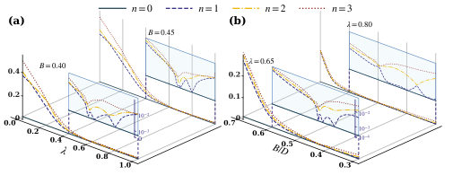
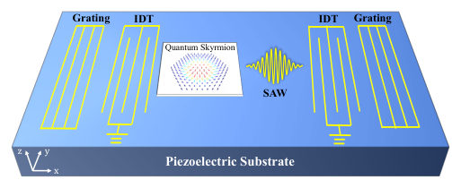
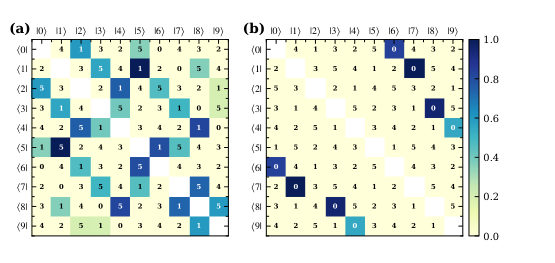
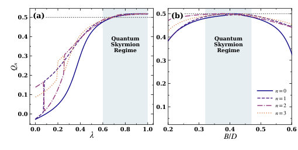
Summary. This theoretical work proposes using quantum skyrmions as qubits controllable by surface acoustic waves (SAWs). By modeling the spin-acoustic coupling via the piezoelectric effect, the authors show that the coupling strength can be enhanced by increasing the skyrmion size. This establishes a viable pathway for integrating quantum magnetic textures into dense, on-chip quantum information processors.
Why it may be interesting. This work directly bridges condensed matter magnetism (skyrmions) with quantum optics/acoustics (SAW phonons) to realize a controllable quantum qubit, which is highly relevant for solid-state quantum computing architectures.
Main problem. The paper addresses the coherent control of a quantum skyrmion, a promising candidate for quantum information storage, using quantized surface acoustic wave (SAW) phonons.
Main result. They demonstrate that the coupling strength between the quantum skyrmion qubit and the SAW phonon can be enhanced and reaches the strong-coupling regime, enabling its use as a building block for hybrid quantum devices.
Method. The study employs exact diagonalization of a Dzyaloshinskii-Moriya-Interaction (DMI) Hamiltonian on a finite lattice, followed by deriving the interaction Hamiltonian with the quantized SAW field.
Model / system. The system models a quantum skyrmion hosted in a magnetic nanostructure coupled to a SAW cavity on a piezoelectric substrate. The physics is governed by the DMI Hamiltonian, and the coupling is mediated by the electric field from the SAW.
Key observables. Quantum scalar chirality ($Q_n$), energy spectra ($E_n$), and the coupling strength ($g_m$) between the skyrmion and the single-mode SAW.
Important parameters / regimes. The coupling strength scales linearly with the skyrmion radius ($g_m \propto R$), and the strong-coupling regime is confirmed by $g_m/\gamma_{sk} \sim 5.44$.
Assumptions / limitations. The analysis uses a minimal cluster size ($N=19$) as a conservative lower bound, and the coupling is derived via the electric field induced by the piezoelectric effect.
Figures summary. Figures illustrate the tunability of the energy spectrum via boundary condition parameters ($\lambda$) and magnetic field ($B$), and show the characteristic values of the quantum scalar chirality ($Q_n$).
Paper structure. The paper first establishes the theoretical framework by diagonalizing the DMI Hamiltonian to find robust eigenstates and selection rules. It then derives the coupling Hamiltonian with the SAW, analyzes the scaling of this coupling with skyrmion size, and concludes by confirming the feasibility of strong-coupling quantum control.
Skyrmions are competitive candidates for information-storage units and have great prospect in quantum information processing. We here study coherent control of a quantum skyrmion via surface acoustic wave (SAW) phonons in a piezoelectric SAW cavity. Exact diagonalization of a finite Dzyaloshinskii-Moriya cluster reveals the eigenstates of quantum skyrmion with robust scalar chirality. The underlying lattice-spin symmetry imposes polarization-dependent selection rules for the electromagnetic transitions between eigenstates states. Considering the small mode volume of the SAW phonon easy to reach strong coupling, we derive the interaction Hamiltonian between the quantum skyrmion as a qubit and a single-mode quantized SAW via the electric field induced by piezoelectric effect, and find that the coupling strength at the single-phonon level increases linearly with skyrmion radius. This enables enhanced spin-acoustic coupling for larger skyrmionic textures and for low magnetic dissipation. Our results establish few-spin quantum skyrmions as compact building blocks for hybrid quantum information processing and suggest a route toward more densely integrated on-chip quantum devices.
Authors: Konstantin Gattinger, Julian Boesl, Max McGinley, Michael Knap, Frank Pollmann
Type: theory · Category: statistical mechanics · PDF: https://arxiv.org/pdf/2609.13383v1
Analysis basis: full PDF text, analyzed in chunks
Topic relevance: analog quantum simulation 3/5 · correlated / nonlocal dissipation 1/5 · driven-dissipative phase transition 1/5 · methods for driven-dissipative 1/5 · non-equilibrium universality 1/5
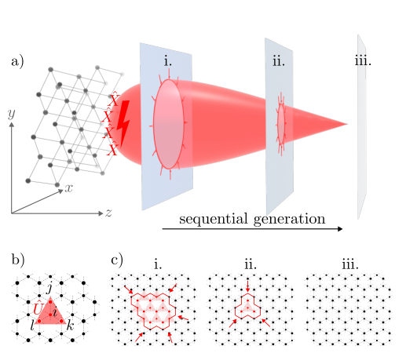
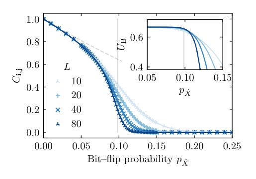
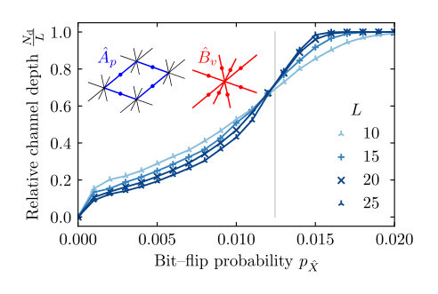
Summary. This paper develops methods to build quantum circuits capable of generating and preserving long-range quantum order against noise. By analyzing the geometry of error syndromes, the authors demonstrate that local error detection and correction can be built into the sequential preparation process for both symmetry-broken and topological states. This advances the field by providing noise-resilient protocols for quantum state preparation.
Why it may be interesting. This work provides concrete, mathematically rigorous methods for engineering quantum hardware protocols that are robust against realistic noise sources, which is crucial for realizing quantum simulation and computation in condensed matter systems.
Main problem. The paper addresses how to design quantum circuits that can prepare and maintain long-range ordered quantum states despite the presence of noise during the preparation process.
Main result. The authors show that by exploiting the spatial structure of error syndromes, specific sequential circuits can suppress the propagation of Pauli noise, allowing the preservation of both symmetry-breaking and topological order below critical error thresholds.
Method. The work employs theoretical constructions of unitary sequential circuits acting on lattice slices, analyzing the evolution of the quantum state under local Pauli noise channels.
Model / system. The models include preparing symmetry-breaking (SSB) order on a 3D lattice and topological order using the 4D (3, 1) toric code. The noise is modeled as Pauli noise acting sequentially during the circuit evolution.
Key observables. Long-range entanglement, connected correlators ($C_{i,j}$), Binder cumulants ($U_B$), and the normalized maximum cluster diameter ($D_{\max}$).
Important parameters / regimes. The critical error rates ($p_c^{\hat{X}}$) for different types of order and noise biases ($\eta = p_- / p_+$).
Assumptions / limitations. The analysis distinguishes between noise during preparation versus noise on the final state, and the stability often requires the use of non-Clifford gates.
Figures summary. Figures illustrate the circuit logic for 3D SSB preparation, the action of the cellular automaton decoder on syndrome violations for the toric code, and plots showing $D_{\max}$ vs. error probability to determine critical thresholds.
Paper structure. The paper progresses by first establishing the general problem of noise-resilient preparation, then applying this framework to specific models like SSB order (3D) and the toric code (4D), detailing the necessary local error-suppressing gates and the resulting threshold physics.
Sequential circuits provide an optimal linear-depth route to unitarily preparing long-range ordered quantum states, but circuit-level noise can be far more damaging than noise applied after preparation: local errors may be propagated by subsequent gates into nonlocal defects that destroy the target order. In this work, we present classes of unitary sequential circuits that prepare certain non-trivial orders in the presence of Pauli noise. Our constructions exploit the spatial structure of the syndromes of the target state, which in certain cases allows us to systematically suppress the propagation of errors using strictly local gates. The strategy can be applied both to symmetry-breaking order, for which we present a 3D example, and to topological order, which we showcase on a 4D version of the toric code. We also highlight how this stability against errors necessitates non-Clifford gates, and how measurement-feedback loops can be used to stabilize lower-dimensional states as well.
Authors: Yuki Kodama, Holger F. Hofmann
Type: theory · Category: quantum information and computing · PDF: https://arxiv.org/pdf/2609.15040v1
Analysis basis: full PDF text, analyzed in chunks
Topic relevance: interference shaping light 3/5 · Full counting statistics 1/5 · analog quantum simulation 1/5 · methods for driven-dissipative 1/5 · quantum measurements 1/5

Summary. This paper theoretically investigates how to efficiently generate multi-mode entanglement between two local multi-photon systems using a mode swapping operation. By analyzing the output photon number statistics after post-selection, the authors demonstrate that the swap introduces strong non-local correlations. The results confirm that this process is a viable method for generating entanglement in photonic quantum circuits.
Why it may be interesting. This work provides a detailed theoretical analysis of entanglement generation in photonic systems using mode swapping, which is a key technique in quantum optics and quantum information processing.
Main problem. The paper addresses the challenge of efficiently generating multi-mode entanglement between two local multi-photon systems using the mode swapping operation.
Main result. The mode-swapping operation successfully generates non-local correlations and entanglement, demonstrated by the output photon number distribution differing significantly from the input state.
Method. The analysis involves decomposing creation operators and calculating the post-selected output state $|\Psi_{2,1} angle$ by projecting the full output state onto a specific initial local photon number subspace.
Model / system. The model consists of two local three-mode interferometers subjected to a mode swapping operation, which is implemented using local unitary transformations like the Discrete Fourier Transform (DFT).
Key observables. Joint photon number probabilities $P(n_A, n_B)$, the success probability of post-selection ($P_{2,1} = 4/9$), and the resulting output photon number distribution.
Important parameters / regimes. The analysis uses an asymmetric three-photon input state, specifically $|200 angle_A |100 angle_B$.
Assumptions / limitations. The analysis assumes that local unitary transformations are chosen to realize the DFT, ensuring the swapped modes are unbiased superpositions of input modes.
Figures summary. Figure 1 schematically illustrates the mode swapping process using DFTs. Table 1 presents the joint photon number probabilities $P(n_A, n_B)$ conditioned on the $(2, 1)$ post-selection.
Paper structure. The paper introduces the problem of multi-mode entanglement generation via mode swapping, details the mathematical framework using operator decomposition and state projection, presents the results via joint probability tables, and concludes by discussing the implications for quantum circuit design.
Entanglement between two local multi-photon multi-mode systems can be generated by swapping a pair of modes between the two local multi-mode systems. In this presentation, we consider possible strategies for the efficient generation of entanglement between systems with three or more modes. It is shown that the choice of photon number inputs in the local systems adds a new degree of freedom to the non-local interference effects observed in the output photon number statistics.
Authors: Naoki Shibuya
Type: both · Category: quantum gases · PDF: https://arxiv.org/pdf/2609.13762v1
Analysis basis: full PDF text, analyzed in chunks
Topic relevance: analog quantum simulation 3/5 · methods for driven-dissipative 2/5 · Keldysh / 2PI / non-Gaussian methods 1/5 · quantum measurements 1/5
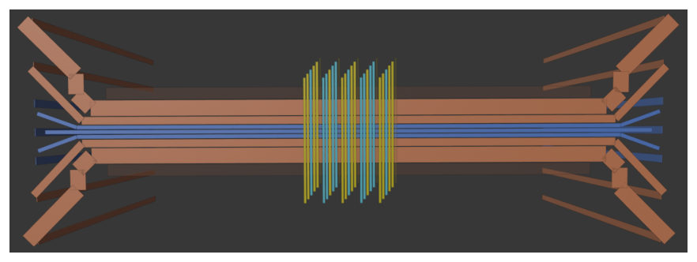
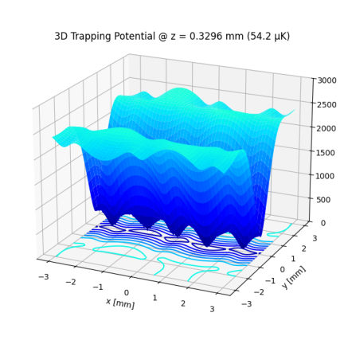
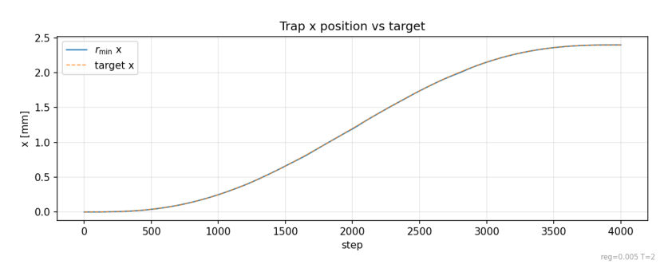
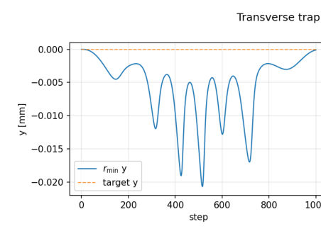
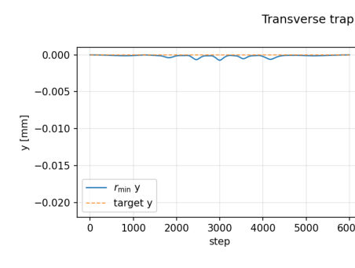
Summary. The authors developed a surrogate-assisted workflow to efficiently characterize how Bose-Einstein condensates move on an atom chip. This method uses fast, low-cost models to screen optimal transport protocols, which are then validated by high-fidelity 3D Gross-Pitaevskii equation simulations. The results confirm the utility of the surrogate approach while providing detailed insights into the condensate's final state fidelity and dynamic behavior.
Why it may be interesting. This work represents a sophisticated integration of machine learning/optimization techniques (surrogate models) with rigorous quantum simulation (GPE) to solve a complex, time-dependent many-body physics problem in cold atoms.
Main problem. The paper addresses the challenge of accurately characterizing the transport dynamics and final state fidelity of a Bose-Einstein condensate (BEC) over millimeter-scale distances using an atom chip.
Main result. The surrogate-assisted workflow provides a low-cost screening tool, while detailed Gross-Pitaevskii equation (GPE) propagation confirms predictions and resolves complex dynamics like persistent sloshing, achieving high endpoint fidelities ($F_{3D} > 0.9997$).
Method. A multi-stage workflow combines inverse optimization, a low-cost Gaussian phase-space surrogate model, Thomas-Fermi scaling, and detailed 3D GPE numerical propagation using a split-step Fourier method.
Model / system. The system is a $^{87} ext{Rb}$ BEC confined and transported on a multi-wire atom chip, governed by the time-dependent Gross-Pitaevskii equation (GPE). The external potential is controlled via time-dependent magnetic fields.
Key observables. Endpoint Fidelity ($F_{3D}$), Center-of-Mass (COM) excursion, Cloud Geometry (covariance matrix $\mathbf{\Sigma}$), and Thomas-Fermi (TF) radii.
Important parameters / regimes. Atom Number ($N=10^3, 10^4$), Transport Duration ($T$), Regularization Strengths ($\lambda$), and effective interaction strength ($g_{ ext{eff}}$).
Assumptions / limitations. The surrogate model relies on Gaussian approximations, and the detailed dynamics are solved using the GPE, which is analyzed in the Thomas-Fermi limit for scaling estimates.
Figures summary. Figures compare surrogate predictions for endpoint fidelity ($F_{ ext{COM}}$) and COM excursion ($C_{\lambda,N}(T)$) across different regularization strengths and transport durations, demonstrating the dependence of optimal parameters on time.
Paper structure. The paper outlines a workflow: 1) Inverse optimization generates candidate current schedules. 2) A low-cost Gaussian model ranks these schedules. 3) A Thomas-Fermi model estimates cloud dimensions. 4) Selected schedules are validated by detailed 3D GPE propagation to resolve dynamics and fidelity.
We develop a surrogate-assisted workflow for millimeter-scale transport of a $^{87}$Rb Bose--Einstein condensate (BEC) on a multi-wire atom chip. Gradient-based inverse optimization generates 42 current schedules spanning seven regularization strengths and six transport durations. A low-cost Gaussian phase-space model ranks these schedules by endpoint overlap at three atom numbers. A Thomas--Fermi scaling (Ermakov) model estimates cloud dimensions for case-specific moving-grid construction. We then evaluate selected schedules in detail with the three-dimensional Gross--Pitaevskii equation (GPE). At $N=10^3$ and $T=0.5$ s, the surrogate predicts a larger axial center-of-mass (COM) excursion than at longer durations. The GPE confirms this prediction and reveals sloshing that persists through delivery, with an endpoint fidelity $F_{3D}=0.9244$. For all five longer transports, the surrogate predicts near-unit endpoint overlap for the top-ranked schedules, and GPE propagation using these schedules gives $F_{3D}>0.9997$. At $N=10^4$ and $T=2.0$ s, the surrogate-selected schedule similarly gives $F_{3D}=0.999932$. These results demonstrate that the surrogate estimates provide a useful low-cost basis for candidate screening, while GPE propagation resolves the transport dynamics and the delivered condensate state.
Authors: Pavel Sulimov, Claude Lehmann
Type: both · Category: quantum information and computing · PDF: https://arxiv.org/pdf/2609.14424v1
Analysis basis: full PDF text, analyzed in chunks
Topic relevance: QC/QI experiment 3/5 · quantum measurements 3/5
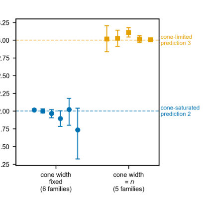
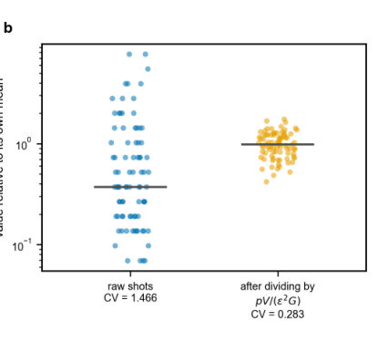
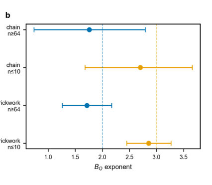
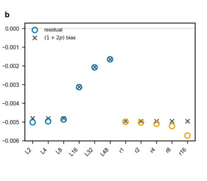
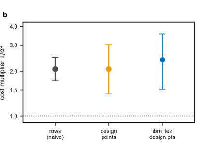
Summary. This paper develops a rigorous framework to calculate the true experimental cost required to certify the performance of variational quantum models. It shows that this cost depends on measurable quantities like readout variance and gradient norm, rather than just the number of parameters. This shifts the focus of quantum algorithm assessment from simple accuracy claims to verifiable resource estimation.
Why it may be interesting. It provides rigorous, quantitative guidelines for benchmarking quantum machine learning models, shifting the focus from simply achieving a low error rate to proving that the required experimental resources (shot budget) are feasible.
Main problem. The paper addresses the critical issue of determining the true computational cost (shot budget) required to certify the empirical Fisher matrix of a trained variational quantum model, arguing that measurement correlation, not just parameter count, dictates this cost.
Main result. The certification cost scales according to a closed-form law dependent on the measured readout variance ($V$) and squared gradient norm ($G$), showing that commonly assumed cubic scaling is merely a finite-size artifact.
Method. The authors derive and test a scaling law for the required shot budget, $S \propto pV/(\varepsilon^2G)$, by analyzing how measured quantities scale across different quantum circuit families.
Model / system. The study focuses on variational quantum models implemented on quantum circuits, comparing different entanglement structures like product families and brickwork entanglers. The analysis is benchmarked against both theoretical scaling laws and measurements on specific quantum hardware (e.g., IBM devices).
Key observables. Certification cost ($S$), readout variance ($V$), squared gradient norm ($G$), and scaling exponents for various circuit families.
Important parameters / regimes. Target relative Frobenius error ($\varepsilon$), scaling parameter ($p$), and the system size (number of qubits, $n$).
Assumptions / limitations. The cost law derived is optimal only within the coordinate-wise parameter-shift measurement class, and the analysis is limited to specific low-depth, one-dimensional coupling topologies.
Figures summary. Figures illustrate the cost derivation using $V$ and $G$, demonstrate that a single constant reproduces the cost for different circuit families, and show the failure of the cubic cost scaling at larger system sizes.
Paper structure. The paper establishes the theoretical cost law (Theorem 1), analyzes the scaling behavior of this cost across various quantum circuit topologies, compares these findings to hardware measurements, and concludes by contrasting measurement cost against simple accuracy metrics.
Reporting the Fisher geometry of a trained variational quantum model is routine; quoting the shot budget that would establish it is not. Certifying an empirical Fisher matrix to relative Frobenius error $\varepsilon$ under coordinate-wise parameter shift costs $Θ(B p^{2} V/(\varepsilon^{2} G))$ circuit executions, where $V$ is the measured readout variance and $G$ the measured squared gradient norm, with uniform allocation optimal in that class. One constant reproduces the cost of two circuit families whose exponents differ by a full power of $p$. The exponent is an identity in how $nV$ and $nG$ scale with the register, holding family by family to $0.001$ across 624 matrix-product-state cells once the finite-$p$ prefactor is removed. The cubic cost is therefore a finite-size window, set by whether the readout light cone grows with the register. A product family to 256 qubits gives $1.966$ (95% CI $1.934$--$1.997$); a brickwork entangler falls from $2.853$ below ten qubits to $1.715$ beyond sixty-four; a blocked entangler gives $1.984$ at a fixed cone width against $3.034$ at a proportional one. Fixed device connectivity fixes the cone, so a cubic budget from a small simulation overestimates a large machine, on top of hardware multipliers $2.07\times$ ($1.41$--$3.02$), $2.38\times$ and $1.91\times$ on ibm_marrakesh, ibm_fez and ibm_kingston. Cost-optimal readout weights cut the measured shot budget by $2.67\times$ ($1.33$--$4.00$) on hardware, flat from four to twelve qubits. A discrepancy model fitted on cheap circuits transfers its mean inside the calibration grid and, at six larger sizes named before the data, does not: nominal 90% intervals cover 36%, and split conformal is the only rung that stays near nominal.
Authors: Songbo Xie, Ethan Dickey, Syed Ahmed Taimoor, Sabre Kais
Type: theory · Category: quantum information and computing · PDF: https://arxiv.org/pdf/2609.14620v1
Analysis basis: full PDF text, analyzed in chunks
Topic relevance: quantum measurements 3/5 · analog quantum simulation 2/5 · Full counting statistics 1/5
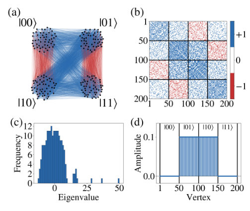
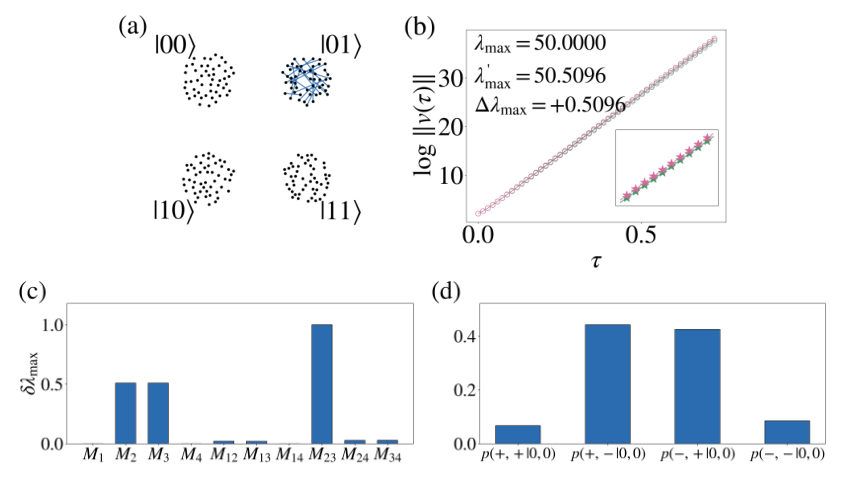
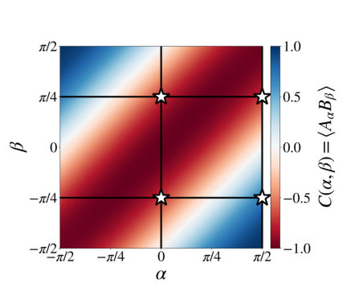
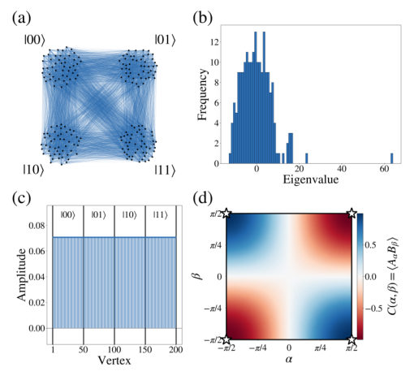
Summary. This paper proposes a method where the measurement statistics of an effective two-qubit quantum state are read out entirely from the spectral response of a structured classical network. By applying small connectivity perturbations and measuring the resulting spectral shifts, the authors reconstruct joint probabilities and demonstrate a violation of the CHSH inequality, proving the method's capability to detect quantum correlations classically.
Why it may be interesting. This work provides a novel, purely classical mechanism—analyzing spectral responses—to probe quantum-like correlations, offering insights into how complex classical dynamics can mimic quantum information processing capabilities.
Main problem. The research addresses whether a classical network can not only encode a quantum-like state but also read out its measurement statistics using its own collective dynamics.
Main result. The authors establish an informationally complete dynamical readout of effective two-qubit states directly from the spectral response of a classical network, demonstrated by violating the CHSH inequality for an encoded Bell state.
Method. Measurement statistics are reconstructed by measuring the first-order spectral shifts ($\delta\lambda_\mu$) resulting from ten elementary connectivity perturbations applied to the network's dynamics.
Model / system. The system is a structured classical network (graph G) whose dynamics are analyzed via its adjacency matrix. The network is designed to encode an effective two-qubit quantum state in its dominant collective mode.
Key observables. Spectral shifts ($\delta\lambda_\mu$), joint-outcome probabilities $p(a, b|x, y)$, and the CHSH parameter $|S|$.
Important parameters / regimes. The number of elementary perturbations (ten) required to form a complete basis for the real two-qubit sector.
Assumptions / limitations. The readout relies on first-order perturbation theory, assuming perturbations are small relative to the spectral separation of the dominant mode.
Figures summary. Figures illustrate the network structure, the spectral shift measurement process, and the resulting correlation landscapes for both an entangled Bell state ($|S| > 2$) and a separable product state ($|S| \le 2$).
Paper structure. The paper introduces the concept of network-native readout, details the use of spectral perturbation theory to calculate expectation values, shows the reconstruction of joint probabilities, and finally benchmarks the method using the CHSH inequality.
Can a classical network not only encode a quantum-like state, but also read out its measurement statistics through its own collective dynamics? Here we introduce a network-native readout scheme for a structured classical network whose community modes form an effective two-qubit state space. Network connectivity selects a dominant collective mode that encodes the state, while a fixed set of ten elementary connectivity perturbations probes its collective response. The resulting shifts of the dominant growth rate form a complete basis of expectation values for the real two-qubit sector, from which joint-outcome probabilities associated with arbitrary real projectors are reconstructed by linear combination. Once these ten spectral responses are measured, the same data generate correlations over a continuous family of measurement settings. As a benchmark, for an encoded Bell state four selected correlations give $|S|=\chsh>2$, whereas a separable product-state reference remains within the Clauser--Horne--Shimony--Holt (CHSH) bound $|S| \leq 2 $. These results establish an informationally complete dynamical readout of effective two-qubit states directly from the spectral response of a classical network.
Authors: Shao-Wei Xu, Zhe-Yuan Zhang, Yi-Tong Shi, Ye-Hong Chen, Yan Xia
Type: theory · Category: quantum information and computing · PDF: https://arxiv.org/pdf/2609.15477v1
Analysis basis: full PDF text, analyzed in chunks
Topic relevance: methods for driven-dissipative 3/5 · correlated / nonlocal dissipation 1/5 · driven-dissipative phase transition 1/5 · quantum measurements 1/5
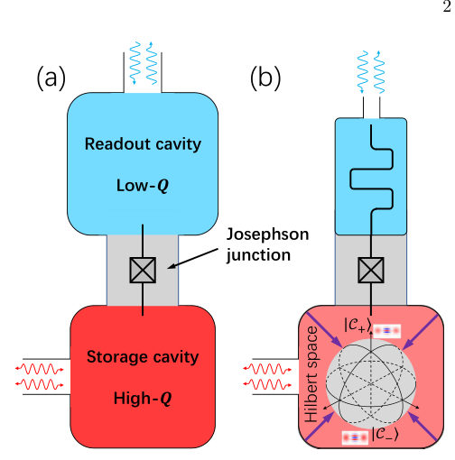
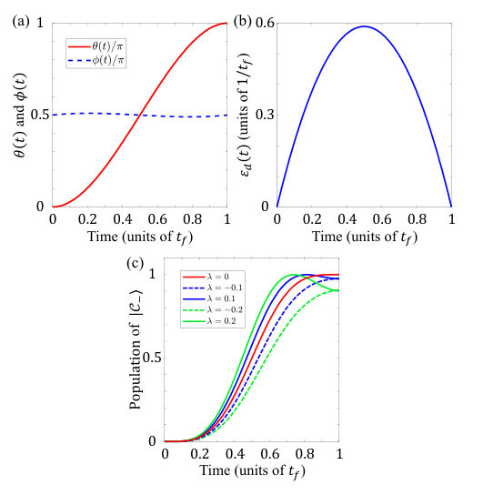
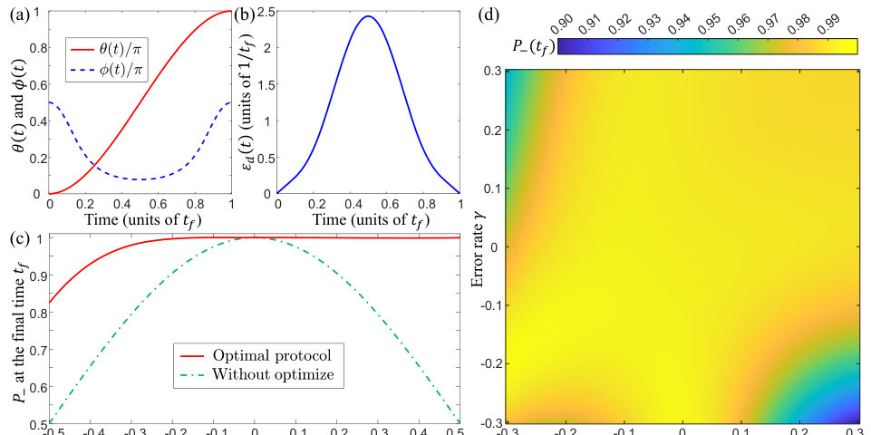
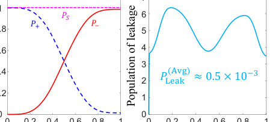
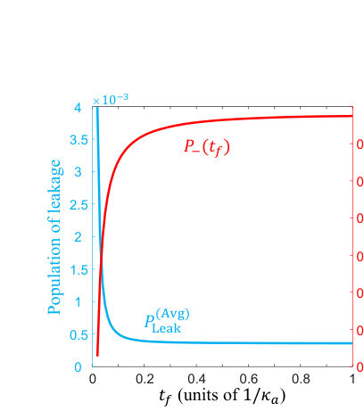
Summary. This paper details a robust control protocol for cat-state qubits, which are promising bosonic qubits for fault-tolerant quantum computing. By engineering two-photon dissipation, the system is naturally confined to the desired cat-state subspace. The authors use advanced techniques like STA and error sensitivity analysis to design a protocol that achieves fast, high-fidelity state transfer while actively suppressing systematic control errors and leakage.
Why it may be interesting. This work is highly relevant as it merges concepts from open quantum systems (dissipation engineering) with quantum information theory (fault tolerance and robust control), providing concrete, implementable protocols for superconducting qubit platforms.
Main problem. The paper addresses the challenge of achieving high-fidelity, fault-tolerant quantum computation using cat-state qubits by engineering dissipation and designing robust control pulses.
Main result. The authors propose a framework that uses engineered two-photon dissipation to stabilize the system in the cat-state subspace, enabling fast, high-fidelity state transfer while suppressing leakage and systematic control errors.
Method. The methodology combines deriving effective dynamics via adiabatic elimination, designing protocols using shortcut-to-adiabaticity (STA) via inverse engineering, and performing detailed sensitivity analysis on control errors.
Model / system. The system is based on cat-state qubits, bosonic encodings realized in coupled cavities, whose dynamics are governed by a Lindblad master equation. The analysis reduces the problem to an effective two-level description within the cat-state subspace.
Key observables. Fidelity ($F$), Noise sensitivity ($q_n$), and the state transfer population ($P_-(t_f)$).
Important parameters / regimes. Dissipation rate ($\kappa_2$), Liouvillian gap ($\Delta_L$), and the systematic error parameter ($\lambda$).
Assumptions / limitations. The analysis relies on adiabatic elimination of one cavity mode and assumes the ability to engineer specific two-photon dissipation rates.
Figures summary. Figure 1 illustrates the physical setup and the confinement of the quantum state into the cat-state subspace by engineered dissipation. Figure 2 tracks the state transfer population and shows the impact of control errors on fidelity.
Paper structure. The paper proceeds by first establishing the physical model and the role of engineered dissipation in stabilizing the cat-state subspace. It then develops the control protocol using STA, followed by rigorous analysis of robustness against systematic errors and noise sensitivity.
Cat-state qubits, a prominent class of bosonic encodings, offer a promising pathway toward hardware-efficient fault-tolerant quantum computing. In this manuscript, we propose an optimally robust control protocol for the cat-state qubits which are stabilized by engineering two-photon dissipation. By deriving an effective two-level description in the cat-state subspace and applying shortcut-to-adiabaticity via inverse engineering, we design a robust protocol to achieve fast and high-fidelity state transfer in the cat-state qubit. We analyze the sensitivity to systematic control errors and identify an optimal robustness condition that strongly suppresses errors induced by imperfections in the driving fields. Furthermore, we show that dissipative confinement efficiently suppresses leakage out of the cat-state subspace caused by the pure dephasing, highlighting an intrinsic advantage of dissipative-cat qubits. This work establishes a robust and leakage-suppressing framework for high-fidelity bosonic qubit control, offering a promising route toward scalable fault-tolerant quantum computing.
Authors: Aeishah Ameera Anuar, PV Sriluckshmy, Riccardo Rossi, Fedor Simkovic
Type: theory · Category: strongly correlated electrons · PDF: https://arxiv.org/pdf/2609.15272v1
Analysis basis: full PDF text, analyzed in chunks
Topic relevance: methods for driven-dissipative 3/5 · Keldysh / 2PI / non-Gaussian methods 1/5 · analog quantum simulation 1/5 · quantum measurements 1/5
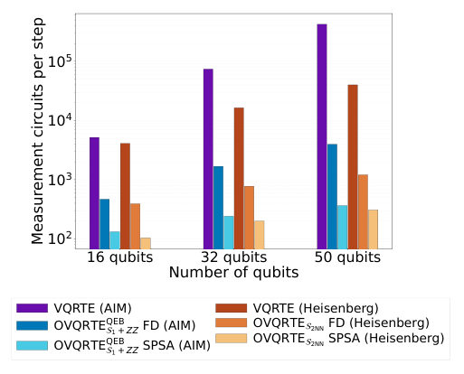
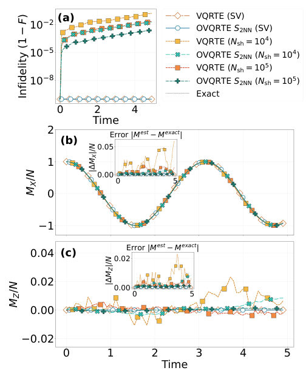
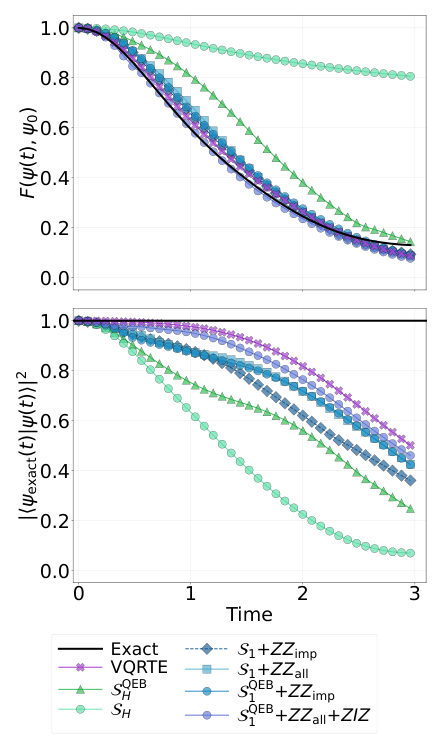
Summary. This paper introduces Operator-Projected Variational Quantum Real-Time Evolution (OVQRTE) to overcome the computational bottleneck of simulating correlated quantum systems. By projecting the dynamics onto a small, measurable set of operators, it significantly reduces quantum resource requirements compared to existing variational methods. The approach is demonstrated to be effective for simulating models relevant to condensed matter physics on near-term quantum hardware.
Why it may be interesting. This work provides a resource-efficient pathway to simulate complex, strongly correlated quantum dynamics on NISQ devices by intelligently restricting the necessary measurements, which is crucial for studying materials physics.
Main problem. Accurately simulating the real-time dynamics of correlated quantum many-body systems remains challenging due to the exponential growth of the full operator basis.
Main result. The proposed OVQRTE method successfully simulates dynamics for models like the Heisenberg and Anderson impurity models on near-term quantum hardware, showing convergence comparable to exact methods.
Method. The method projects the full dynamics onto a polynomially sized set of observables $S$ by enforcing the Ehrenfest equations, thus avoiding the need to track the exponentially large operator basis.
Model / system. The work applies to correlated quantum systems, specifically benchmarking on the 1D Heisenberg model and the Anderson impurity model, utilizing parameterized quantum circuits for state representation.
Key observables. Expectation values of selected observables $\langle\hat{O}_\alpha angle_t$, ground-state energy, and density of states.
Important parameters / regimes. The choice of the observable set $S$ allows a systematic trade-off between simulation accuracy and measurement cost. The simulation uses up to 24 qubits.
Assumptions / limitations. The dynamics are restricted (projected) onto the span of a polynomially chosen set of operators $S$, and the method avoids estimating the quantum geometric tensor required by some variational approaches.
Figures summary. Figures compare energy errors for the Anderson impurity model, showing that SPSA-driven OVQRTE evolution converges toward the accuracy of exact matrix exponentiation as the number of iterations increases.
Paper structure. The paper introduces OVQRTE to address real-time simulation challenges, details the mechanism of projecting dynamics onto a small operator set $S$ by solving a linear system derived from Ehrenfest equations, and validates the approach on specific models like the Heisenberg and Anderson impurity models.
Accurate real-time simulation of correlated quantum systems remains challenging for both classical methods and near-term quantum hardware. We introduce operator-projected variational quantum real-time evolution (OVQRTE), which updates a parameterized circuit by enforcing the Ehrenfest equations for a selected set of observables. OVQRTE requires only expectation-value measurements, while the choice of operator set enables a systematic trade-off between accuracy and measurement cost, substantially reducing quantum-resource requirements relative to existing variational real-time-evolution algorithms. After implementing OVQRTE dynamics of Heisenberg model on a simulator, we benchmark the algorithm for the Anderson impurity models on the IQM Emerald superconducting processor using up to 24 qubits. We further use OVQRTE to sample computational-basis states for quantum-selected configuration interaction (QSCI), enabling the calculation of the ground-state energy and density of states within a self-consistent ghost-Gutzwiller Ansatz (gGut) embedding loop. Our results establish OVQRTE as a promising approach for investigating correlated condensed-matter systems on near-term quantum hardware.
Authors: Iogann Tolbatov, Luca Salasnich
Type: theory · Category: quantum gases · PDF: https://arxiv.org/pdf/2609.14613v1
Analysis basis: full PDF text, analyzed in chunks
Topic relevance: analog quantum simulation 3/5 · Keldysh / 2PI / non-Gaussian methods 2/5
Summary. This theoretical work examines how altermagnetism modifies the superfluid phase of a 2D Fermi gas across the BCS-BEC crossover. By calculating the phase stiffness, the authors find a universal quadratic suppression relation that holds across the crossover in the fully gapped regime. This provides a powerful tool to compare pair-breaking mechanisms in both weakly and strongly coupled superfluid systems.
Why it may be interesting. The universal quadratic suppression provides a clean, quantitative prediction for how magnetic order parameters (like altermagnetism) modify superfluid properties across fundamental quantum phase transitions, which is highly relevant for engineered quantum materials.
Main problem. The study investigates how altermagnetism affects the superfluid phase of a two-dimensional paired Fermi system as it crosses from the weak-coupling BCS regime to the strong-coupling BEC regime.
Main result. The phase stiffness exhibits a universal quadratic suppression, $J/J_0 = 1 - (\alpha/\alpha_0)^2$, across the fully gapped crossover, though deviations appear on the BCS side when gapless Bogoliubov pockets form.
Method. The analysis uses a continuum mean-field approach to calculate the phase stiffness by examining the free energy change when the paired state acquires a small center-of-mass momentum.
Model / system. The system is a 2D paired Fermi gas subjected to an altermagnetic splitting, modeled by spin-dependent single-particle dispersions ($\xi_{k\uparrow}$ and $\xi_{k\downarrow}$). The pairing interaction is treated as a local, attractive, spin-singlet interaction.
Key observables. Phase stiffness ($J/J_0$), pairing gap ($\Delta_0$), chemical potential ($\mu$), and the stability of the uniform paired state.
Important parameters / regimes. Altermagnetic coupling strength ($\alpha$), crossover parameter ($\alpha/\alpha_0$), and temperature ($T=0$ is the primary focus).
Assumptions / limitations. The analysis assumes an effective spin-singlet, local attractive interaction and focuses on the uniform paired state stability by examining the quadratic response to momentum.
Figures summary. Figures illustrate the quasiparticle structure across the crossover, showing the zero-crossing of stiffness on the BCS side and the plateau on the BEC side, while a third figure shows the free-energy landscape for finite-momentum instabilities.
Paper structure. The paper establishes the model Hamiltonian incorporating altermagnetic splitting, derives the phase stiffness from the free energy functional, and then analyzes the behavior of this stiffness across the BCS-BEC crossover, distinguishing the physics on both sides.
We study a two-dimensional paired Fermi system in which altermagnetism produces a spin splitting that depends on momentum. The interaction strength is described through the two-body binding energy, so that the chemical potential and pairing gap evolve self-consistently from the weak-coupling Bardeen-Cooper-Schrieffer (BCS) regime to the strong-coupling Bose-Einstein-condensate (BEC) regime at fixed density. The stability of the uniform paired state is examined by giving the pairs a small center-of-mass momentum and following the resulting change in free energy. We show that at zero temperature, the phase stiffness follows a universal quadratic suppression, $J/J_0 = 1 - (α/α_0)^2$, across the entire fully gapped crossover regime. Deviations from this relation emerge only on the BCS side upon the opening of gapless Bogoliubov pockets, which rapidly reduce the stiffness and can trigger an instability toward finite-momentum pairing. In the BEC regime, this universal quadratic correction corresponds to the altered effective mass of the tightly bound composite bosons. The model therefore provides a simple setting in which to compare altermagnetic pair breaking on the BCS and BEC sides of the crossover.
Authors: Yeongjun Kim, Supriyo Ghosh, Sergej Flach
Type: theory · Category: disordered systems and neural networks · PDF: https://arxiv.org/pdf/2609.15271v1
Analysis basis: full PDF text, analyzed in chunks
Topic relevance: analog quantum simulation 3/5 · driven-dissipative phase transition 2/5
Summary. This work introduces a powerful 'disorder tailoring' technique to control the localization properties of quantum systems, specifically using the Hatano-Nelson chain. By mathematically deriving the required disorder realization, the authors can force the system to host perfectly delocalized eigenstates at specific energies. This method provides a systematic tool for designing quantum materials with tailored electronic properties.
Why it may be interesting. The ability to deterministically control localization/delocalization transitions by engineering disorder is highly relevant for designing quantum simulators or understanding transport in disordered materials, bridging concepts from condensed matter theory and control theory.
Main problem. The paper addresses the systematic challenge of engineering disordered quantum systems to host specific, predefined eigenstates, particularly completely delocalized states.
Main result. By tailoring the disorder field (onsite potentials $\epsilon_n$), it is possible to force the existence of an eigenstate with arbitrary properties, such as perfect delocalization, even in non-Hermitian systems.
Method. The core method is an 'inverse tailoring' approach, where the required disorder realization is derived by specifying the target eigenstate $\Psi_T$ and solving the resulting eigenvalue problem.
Model / system. The primary model is the unidirectional Hatano-Nelson (uHN) chain, a non-Hermitian lattice model, generalized to arbitrary hopping fields and lattice dimensions. The Hamiltonian governs the system's energy spectrum.
Key observables. Localization length ($\xi_{sel}$), Participation Number ($P$), and the spectral location of the engineered eigenstate.
Important parameters / regimes. The hopping strength ($t$), the disorder realization $\{\epsilon_n\}$, and the energy $E$ relative to the engineered delocalized state.
Assumptions / limitations. The analysis often assumes periodic boundary conditions (PBC) for the uHN chain and relies on the ability to precisely tune the disorder to meet specific mathematical conditions (e.g., $|\epsilon_n - E_0| = |t|$).
Figures summary. Figures illustrate the spectral loops (Cassini ovals) for different disorder types, and show the divergence of the participation number and localization length ($\xi \sim |E|^{-2/3}$) near the engineered delocalized energy.
Paper structure. The paper progresses from analyzing the basic uHN chain localization properties to demonstrating the condition for delocalization via spectral geometry. It then generalizes this to an inverse tailoring method, culminating in the construction of a fully delocalized state by prescribing the target eigenstate $\Psi_T$.
We derive disorder fields tailored by the details of a choice of a delocalized wave function. We first investigate the unidirectional Hatano-Nelson chain and its localization properties under $M$-base diagonal disorder with variable weights. The spectrum forms loops in the complex plane and the loop parameter is a good quantum number similar to a momentum. All eigenstates are subexponentially `localized', i.e. the logarithm of the absolute value of the wave function performs a random walk in space, and are characterized by a corresponding length scale $ξ_{sel}$ as shown in 1998 by Silvestrov for the general Hatano-Nelson chain. For $M=2$ real-valued binary disorder with equal weights the model was solved in Zeitschrift für Naturforschung A 81 421, yielding Cassini oval spectral loops and a diverging subexponential localization length for two eigenstates and for disorder weaker than a critical value set by the hopping strength. When the disorder field for any $M$ and arbitrary weights is confined to circles in the complex plane with radius equal to the hopping strength, the circle center will belong to the spectrum and to one of the spectral loops, and host a plane-wave-like eigenstate with diverging $ξ_{sel}$. We generalize to tailoring on-site disorder for a given eigenstate at a given energy, for any lattice dimension, and any hopping field (both ordered and disordered), for Hermitian and non-Hermitian systems. We exemplify by constructing a one-dimensional chain with Anderson-localized eigenstates hosting a completely delocalized one with random phases. The localization length diverges as $1/|E|^{2/3}$ upon approaching the delocalized state. Our method can be used for the systematic construction of disorder fields which host predefined eigenstates with arbitrary properties.
Authors: Yufeng Wang, Parivesh Priye, Lu Wei, Haibin Ling
Type: theory · Category: numerical methods · PDF: https://arxiv.org/pdf/2609.14711v1
Analysis basis: full PDF text, analyzed in chunks
Topic relevance: quantum measurements 3/5 · methods for driven-dissipative 2/5

Summary. This paper proposes GRPO-QM, a method for quantum tomography that learns an exploration strategy while mathematically guaranteeing the resulting posterior remains stationary via a Metropolis correction. The authors rigorously test this approach, finding that while learning helps, the primary gains come from incorporating the underlying physical proposal mechanisms. It provides deep diagnostics into the limitations of sampled versus exact gradient estimation in quantum inference.
Why it may be interesting. The rigorous mathematical framework for ensuring that machine learning optimization (like reinforcement learning) respects fundamental physical constraints (like detailed balance or stationarity) is highly relevant for developing trustworthy quantum simulation tools.
Main problem. Developing a method to estimate quantum posterior distributions (e.g., density matrices) from measurement outcomes while ensuring the underlying physical sampling process remains stationary and unbiased.
Main result. The authors show that the gains in estimation accuracy from learned exploration strategies are often less significant than those provided by the physical proposal mechanisms or prior knowledge alone.
Method. They introduce GRPO-QM, which learns an exploration policy for reversible physical moves and uses an exact Metropolis correction to guarantee the stationary nature of the target posterior distribution.
Model / system. The context is Quantum Tomography, where the goal is to reconstruct an unknown quantum density matrix ($ ho$) from measurement data ($y$). The process involves continuous path sampling in the space of quantum states.
Key observables. Bures distance ($d_B$), mean physical estimation variance reduction, and the comparison between exact vs. sampled gradient estimates.
Important parameters / regimes. Shot numbers (e.g., 4, 16, 128), KL divergence penalty ($\lambda$), and the structure of the reversible physical moves.
Assumptions / limitations. The policy selection only needs to be state-dependent among reversible physical moves, allowing the Metropolis correction to maintain stationarity; the learned reward cannot change the stated posterior if the scheduler is frozen.
Figures summary. Figures illustrate the overall method pipeline (BuresTomFlow $ ightarrow$ GRPO-QM $ ightarrow$ Metropolis correction) and compare reconstruction errors across different state families and sampling regimes.
Paper structure. The paper first introduces the problem of reward-based learning altering posteriors, then details the GRPO-QM methodology by separating proposal learning from stationarity enforcement. It proceeds through rigorous comparisons of optimization objectives, gradient estimation techniques, and finally quantifies the performance gains across various shot counts.
Reward-based learning can alter the very posterior distribution that scientific inference aims to estimate. GRPO-QM sidesteps this by learning only an exploration strategy for a stated quantum-tomography posterior: a group-relative policy chooses among reversible physical moves, and an exact Metropolis correction ensures the posterior remains stationary once the policy is fixed. We then examine what learning contributes beyond physical proposal mechanisms and prior knowledge. Reconstruction comparisons suggest that most of the gains over the tested flows come from those two components rather than from learning itself, and a closed-form counterexample explains why: a reward tied to accepted motion can increase even when a physical observable remains highly correlated. Reward comparisons that control for initialization also show that aggregating across posteriors can invert the ranking that a reward implies within any single posterior. Lastly, on 45 enumerated posteriors with three training seeds each, exact and sampled gradients of the same trajectory objective reduce mean physical estimation variance by $12.63\%$ and $6.32\%$ relative to a tuned mixture, while averaging the trajectory score without rescaling its penalty yields only $0.43\%$. This indicates that objective scaling accounts for part of the disparity between sampled and exact training. The regained benefit is concentrated at four shots and flips sign at sixteen, so these exact, visible-bank diagnostics identify a concrete, reproducible failure mode in sampled training, the objective-scaling fix that addresses part of it, and the remaining gap.
Authors: Nahid Binandeh Dehaghani, Rafal Wisniewski, Julian Berberich, A. Pedro Aguiar
Type: both · Category: numerical methods · PDF: https://arxiv.org/pdf/2609.14686v1
Analysis basis: full PDF text, analyzed in chunks
Topic relevance: methods for driven-dissipative 3/5 · analog quantum simulation 1/5 · quantum measurements 1/5
Summary. This paper introduces a theoretically rigorous framework for quantum optimal control by employing fixed-rank Hierarchical Tucker (HT) surrogates to manage the exponential growth of Hilbert space dimension. It proves that the approximation error in the control objective and state trajectory decays exponentially with the chosen HT rank. This allows for the design of near-optimal controls using significantly reduced computational resources.
Why it may be interesting. This work provides a rigorous, computationally tractable method to perform quantum optimal control on large systems by systematically bounding the approximation error introduced by tensor network methods like HT.
Main problem. Developing a certified framework for quantum optimal control that overcomes the exponential scaling of Hilbert space dimension.
Main result. The authors establish exponentially decaying error bounds for trajectory, cost, and value-function approximations, proving near-optimality of controls derived from low-rank surrogates.
Method. The core method involves representing the quantum state tensor using fixed-rank Hierarchical Tucker (HT) surrogates to approximate the time evolution and the optimization objective.
Model / system. The framework applies to quantum systems governed by the controlled Schrödinger equation, specifically tested on controlled XXZ spin chains. The dynamics are approximated via HT-surrogate time evolution.
Key observables. Trajectory error, cost functional error, value-function error, and the optimal control gap, all shown to decay exponentially with the HT rank $r$.
Important parameters / regimes. The required rank $r$ scales logarithmically with the desired accuracy $\epsilon$, i.e., $r = O(\log(1/\epsilon))$.
Assumptions / limitations. The analysis relies on the assumption of exponential hierarchical spectral decay (Assumption 2) and a uniform rank-dependent HT truncation-accuracy condition.
Figures summary. Figures demonstrate the exponential decay of spectral spectra and truncation errors with rank $r$, and show the convergence of the performance gap and cost discrepancy as the rank increases.
Paper structure. The paper first establishes the theoretical framework by deriving rigorous, rank-dependent error bounds for the approximation. It then proves near-optimality guarantees and provides an a posteriori cost certificate. Finally, it validates these results using numerical experiments on controlled spin chains.
We develop a certified finite-horizon quantum optimal-control framework based on fixed-rank Hierarchical Tucker (HT) surrogates. Under a uniform rank-dependent HT truncation-accuracy condition, we establish exponentially decaying trajectory, cost, and value-function errors and near-optimality of surrogate-generated controls. We further derive a logarithmic rank--performance relation, an a posteriori cost certificate from realized truncation perturbations, and guarantees for inexact surrogate optimization and control convergence under additional regularity conditions. Numerical experiments on controlled XXZ spin chains provide finite-sample evidence consistent with the truncation condition and illustrate the trade-off between HT rank, representation size, surrogate accuracy, and control performance.
Authors: Qingyu Qu, Yongming Zhang, Xiaoguang Ma
Type: both · Category: statistical mechanics · PDF: https://arxiv.org/pdf/2609.14056v1
Analysis basis: full PDF text, analyzed in chunks
Topic relevance: analog quantum simulation 3/5 · methods for driven-dissipative 1/5 · quantum measurements 1/5
Summary. This paper introduces a novel inverse method to map macroscopic measurements of colloidal spin configurations back to the microscopic Ising coupling constants. By applying this technique to controlled deformations like compression and shear, the authors reveal that external tuning parameters dictate the sign, magnitude, and spatial disorder of the effective magnetic interactions within the artificial spin lattice.
Why it may be interesting. The work provides a powerful, experimentally grounded inference framework for characterizing the effective Hamiltonian parameters in complex, interacting many-body systems, which is highly relevant for understanding emergent quantum phases in artificial quantum simulators.
Main problem. The core problem is the reconstruction of the complete set of spatially resolved effective Ising coupling energies ($\{J_{ij}\}$) from measured spin configurations in colloidal artificial spin lattices, as direct measurement is otherwise impossible.
Main result. The study successfully demonstrates that external control protocols (compression, shear, attraction tuning) systematically alter the microscopic coupling parameters, revealing anisotropic and tunable magnetic interactions.
Method. The authors employ an inverse method using Maximum Likelihood Estimation (MLE) applied to spin configuration data, supplemented by Monte Carlo simulations to approximate ensemble averages.
Model / system. The system is a soft-matter platform of buckled colloidal monolayers, where each particle acts as an Ising spin governed by an Ising Hamiltonian: H = -sum(J_ij * s_i * s_j).
Key observables. Mean coupling $\langle J_{ij} angle$, standard deviation $\sigma_J$ (used as a measure of quenched disorder), and the full coupling distribution $ ho(J_{ij})$.
Important parameters / regimes. Lattice spacing ($\lambda/D$), shear strain ($\epsilon$), and interparticle attraction strength (related to temperature $T$).
Assumptions / limitations. The reliability of the inference is assessed using the convergence of the standard deviation ($\sigma_{\hat{J}}$) as a ground-truth-free criterion, and the MLE process relies on approximating the ensemble average via MC simulation.
Figures summary. Figures illustrate the experimental setup and show how $\langle J_{ij} angle$ and $\sigma_J$ change under compression (becoming more negative and disordered), shear (showing direction-dependent anisotropy), and attraction tuning (showing crossovers from anti- to ferromagnetism).
Paper structure. The paper establishes the inverse problem framework using MLE, validates the method using convergence diagnostics ($\sigma_{\hat{J}}$), and then applies this framework to analyze how three distinct experimental controls (compression, shear, attraction) systematically modify the reconstructed coupling parameters.
Buckled colloidal monolayers constitute a versatile soft-matter platform for engineering artificial spin lattices, with each particle serving as a single Ising spin. While the average Ising coupling energy has been approximately derived for perfect particle lattices, extracting the complete set of coupling parameters from real samples remains inaccessible. Here, we apply an inverse method to reconstruct all nearest-neighbor effective Ising coupling energies from measured colloidal spin configurations. We design multiple experimental protocols to control the thermodynamic state of the colloidal system, from isotropic compression and shear deformation to modulation of interparticle attraction, each giving rise to distinct spin configurations. Using spin configuration data, we reconstruct all nearest-neighbor effective Ising coupling energies using maximum likelihood estimation. To assess inference reliability without ground-truth model parameters, we propose to use the convergence of the standard deviation of the estimated couplings as a practical, ground-truth-free criterion, and validate its reliability using simulation data with known parameters. The extracted spatially resolved couplings reveal how each control protocol influences the sign, magnitude, statistical distribution, and spatial arrangement of the microscopic coupling parameters: isotropic compression strengthens antiferromagnetic couplings and enhances quenched disorder; shear deformation generates direction-dependent anisotropic couplings; and increased interparticle attraction drives a crossover from antiferromagnetic to paramagnetic and then to ferromagnetic couplings. This work establishes a practical inference framework for estimating effective model parameters of colloidal artificial spin lattices.
Authors: Sokea Sang, Leanghok Hour, Sanghyeon Lee, Youngsun Han
Type: both · Category: quantum information and computing · PDF: https://arxiv.org/pdf/2609.13935v1
Analysis basis: full PDF text, analyzed in chunks
Topic relevance: QC/QI experiment 3/5 · quantum measurements 2/5
Summary. This paper introduces SUTURE, a novel runtime for VQAs designed to run on noisy quantum hardware by repairing measurements that violate problem constraints. Instead of discarding these measurements (as purification does), SUTURE uses the constraint violations themselves as a syndrome to guide a localized repair process. This allows quantum computations to sustain execution across noisy boundaries, significantly improving reliability for hard optimization problems.
Why it may be interesting. While focused on optimization, the core concept of using structural redundancy (constraints) to guide error correction/recovery at runtime is highly relevant to developing fault-tolerant quantum algorithms for complex physical simulations.
Main problem. The paper addresses the failure mode of feasibility-preserving Variational Quantum Algorithms (VQAs) when noise causes intermediate measurements to violate problem constraints, leading to execution chain termination.
Main result. The proposed SUTURE runtime successfully repairs infeasible measurements using constraint-derived syndromes, allowing quantum computation chains to complete segments on real hardware where purification methods fail.
Method. SUTURE implements syndrome-guided repair by exploiting the parity-check structure of problem constraints to detect and localize errors, replacing the standard purification step in the VQA execution loop.
Model / system. The work focuses on solving constrained binary optimization problems using segmented VQAs, tested on a real-device IBM Heron quantum computer and simulated up to 120 qubits.
Key observables. Execution chain liveness (completion of all segments), measured solution quality, and hardware timing overhead (e.g., 1.6% increase in path latency).
Important parameters / regimes. Noise level ($\lambda$), qubit count (up to 120 simulated, 72 hardware), and the structural properties of the constraint matrix $C$.
Assumptions / limitations. The repair mechanism relies on the problem constraints forming a parity-check-like structure, and the analysis assumes local noise models (though it is not full Quantum Error Correction).
Figures summary. Figures illustrate the SUTURE pipeline stages (static profiler, runtime decoder) and compare the failure rates of purification versus SUTURE on hardware, showing successful completion for SUTURE in 72-qubit runs.
Paper structure. The paper introduces the problem (NP-hard optimization via VQAs), details the failure of purification, proposes SUTURE with its three stages (profiler, decoder, analysis), validates it on hardware (IBM Heron), and compares its performance against existing methods.
Constrained binary optimization is a representative class of NP-hard problems in scheduling, resource allocation, and finance. Segmented feasibility-preserving variational quantum algorithms (VQAs) are a promising approach that restricts ideal circuit evolution to feasible assignments and executes short measure-and-reseed segments. The existing boundary runtime enforces feasibility through purification, which discards measurements that violate the constraints. As problem size and noise increase, feasible measurements become rare; if no shot survives, the execution chain terminates. In our 72-qubit graph-coloring experiment on a real-device IBM Heron, 11 of 12 purification chains terminate before completing all segments. We propose SUTURE: syndrome-guided repair, a runtime that repairs infeasible measurements instead of discarding them and is deployable on current quantum devices. SUTURE exploits a parity-check-like structure induced by the problem constraints: violated constraints form a syndrome that detects and localizes corruption and, under suitable structural conditions, often identifies a correction. SUTURE combines three stages: (1) a compile-time profiler that uses the compiled constraints and feasible initialization samples to predict single-flip recovery, with a maximum error of 0.011 across four constraint families; (2) a bounded runtime decoder that replaces purification inside the segmented execution loop; and (3) a regime analysis that identifies when repair is preferable to purification. In simulation up to 120 qubits, SUTURE continues the execution chain far beyond the noise level at which purification collapses. In the same 72-qubit experiment on IBM Heron hardware, SUTURE completes all segments in all 12 runs, and hardware timing experiment, decoding adds 1.6% to execution-path latency and less than 1% to total pipeline latency.
Authors: Yasir Iqbal
Type: theory · Category: strongly correlated electrons · PDF: https://arxiv.org/pdf/2609.15947v1
Analysis basis: full PDF text, analyzed in chunks
Topic relevance: analog quantum simulation 3/5 · Keldysh / 2PI / non-Gaussian methods 1/5
Summary. This theoretical work analyzes the doping of a kagome Dirac spin liquid, predicting that charge order sets in before superconductivity due to geometric constraints. Using symmetry analysis, the authors predict specific crystalline charge and current orders, offering testable signatures for correlated electron physics in this lattice structure.
Why it may be interesting. The detailed symmetry analysis and classification of competing orders (charge vs. superconducting) provide a rigorous theoretical framework for understanding emergent electronic phases in frustrated quantum magnets.
Main problem. The paper investigates the fate of a quantum spin liquid (QSL) when charge is restored (doped), specifically on the kagome lattice.
Main result. Doping the kagome Dirac spin liquid leads to a charge and loop-current crystal formation (a chargon Higgs phase) that does not result in superconductivity at leading order.
Method. The analysis uses a symmetry-controlled approach based on the chargon (Higgs) construction and Projective Symmetry Group (PSG) constraints to classify competing ordered states.
Model / system. The system is the doped kagome Dirac spin liquid (DSL), modeled using fermionic spinons and bosonic chargons. The theory analyzes the competition between charge order, pair-density wave (PDW), and loop-current crystal formation.
Key observables. Predicted observables include $C_2$-odd ($F_3$) charge order, loop-current fields of order 10-100 Gauss, and the potential coexistence of charge and current order.
Important parameters / regimes. Key parameters include the bare-mass window width $(\sqrt{6}-1)t$ and the relative strengths of competing crystal orders (e.g., M-star vs. K/2-star).
Assumptions / limitations. The analysis assumes the DSL is the best variational parent state and that the $\Gamma$-point flux ordering occurs with the condensate for certain predictions.
Figures summary. Figures illustrate the four nondegenerate minima for one chargon gauge component and show the competition between M-star and K/2-star condensates reduced to a single angle.
Paper structure. The paper develops the chargon theory, analyzes the symmetry constraints via the PSG, determines the resulting condensed phases (charge/current crystals), and discusses the implications for superconductivity and charge classification.
Doping a quantum spin liquid is expected to give a superconductor. On kagome it gives charge order first, because of band structure rather than interaction. In the chargon (Higgs) construction of its U(1) Dirac spin liquid the two gauge components, degenerate on square and triangular lattices, are split by a line-graph effect: one disperses, four minima at $-(1+\sqrt6)t$; the other has two exactly flat lowest bands at $-2t$. Only the dispersive component condenses, over a bare-mass window of width exactly $(\sqrt6-1)t$, in which the doped spin liquid forms charge and loop-current crystals on the $M$, $K$ and $K/2$ stars, the physical U(1) unbroken: a chargon Higgs phase that does not superconduct. Its pairing channels are those of the $\mathbb{Z}_2$ descendants, a pair-density wave, uniform $d+id$ excluded at leading order and at all orders on the $M$ star. The projective symmetry group reduces the quartic competition to one angle, on which projected on-site repulsion sits exactly at the $M$/$K/2$ boundary, a direction protected to all orders by $O(4)\times U(1)$ under renormalization, though lattice matching gives the physical coupling off-ray components. The competing $M$-star crystals are degenerate through sextic order, split only at eighth. The charge sector carries its own classification, the charged counterpart of the undoped bilinear-and-monopole catalog, which holds no charge-carrying operator; it puts the doped Mott insulator and kagome metals on one $F$-irrep grid, separated by the charge-order irrep ($F_1$ there, $F_3$ here) and the Landau cubic. Predicted: $C_2$-odd ($F_3$) charge order, no cubic invariant; vestigial pair phases of period $h/4e$ or $h/6e$; loop-current fields of order ten gauss at herbertsmithite's $^{17}$O and $^{35}$Cl; and, if the $Γ$ flux orders with the condensate, charge and current order setting in together below the condensation scale.
Authors: Heun Mo Yoo, Tanner M. Janda, Victor Yu, Michael J. Gullans, Adam R. Mills, Jason R. Petta
Type: both · Category: quantum information and computing · PDF: https://arxiv.org/pdf/2609.15751v1
Analysis basis: full PDF text, analyzed in chunks
Topic relevance: QC/QI experiment 3/5 · quantum measurements 1/5
Summary. This paper experimentally and theoretically investigates the impact of residual exchange coupling on two simultaneously driven spin qubits in silicon quantum dots. Key findings include observing distinct beating patterns or split resonance features depending on whether the drive strength or the exchange coupling dominates. This work is vital for improving the fidelity and control of two-qubit gates in solid-state quantum processors.
Why it may be interesting. This work directly addresses the control challenges in solid-state quantum computing by quantifying how residual interactions ($J$) manifest in gate operations, providing critical guidelines for designing robust quantum circuits.
Main problem. The study investigates how residual exchange coupling affects the dynamics of two simultaneously driven spin qubits, which is crucial for implementing fast, controlled two-qubit gates.
Main result. The paper reports distinct signatures: a beating pattern when the Rabi frequency exceeds the exchange coupling, and the emergence of two separated resonance patterns when the exchange coupling dominates.
Method. The authors combine experimental measurements of Rabi oscillations with the development of a theoretical model based on the system's Hamiltonian.
Model / system. The system consists of two spin qubits realized in an Intel triple quantum dot (TQD) in a Si quantum well. The dynamics are analyzed using a Hamiltonian in the Bell state basis, incorporating Rabi frequencies ($\Omega$) and the exchange coupling ($J$).
Key observables. Rabi oscillations, beating patterns, and the splitting of resonance frequencies in the Rabi chevron.
Important parameters / regimes. Exchange coupling ($J$), Rabi frequencies ($\Omega_{Q1}, \Omega_{Q2}$), and the ratio of these parameters relative to each other.
Assumptions / limitations. The analysis relies on characterizing the system in different coupling regimes (weak, strong, nearly independent) and assumes the theoretical model accurately captures the observed physical effects.
Figures summary. Figures illustrate the device structure, the beating pattern in Rabi oscillations as $J$ varies, the appearance of split resonance patterns in the strong coupling regime, and the phase diagram mapping the three operational regimes.
Paper structure. The paper first establishes the problem of residual coupling effects, presents experimental measurements showing beating and splitting patterns across different coupling regimes, and concludes by developing and validating a theoretical model that reproduces these key experimental features.
Exchange coupling and microwave drives are widely used control mechanisms for spin qubits. However, the influence of exchange coupling on microwave-driven spin dynamics is not fully understood. We report simultaneous drive measurements of two spin qubits as a function of exchange coupling and drive power. When the Rabi frequency exceeds exchange, we observe a beating pattern in the Rabi oscillations. In the opposite limit, two exchange-split patterns emerge in the Rabi chevrons. We find that these exchange-induced effects are suppressed when the difference in the Rabi frequencies exceeds the exchange coupling. A theoretical model is developed that reproduces the main features in our data.
← Index · ← Previous · Next →